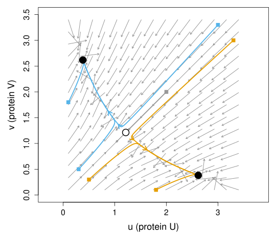
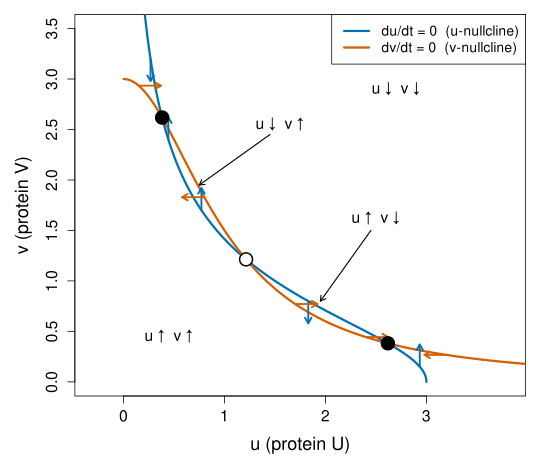
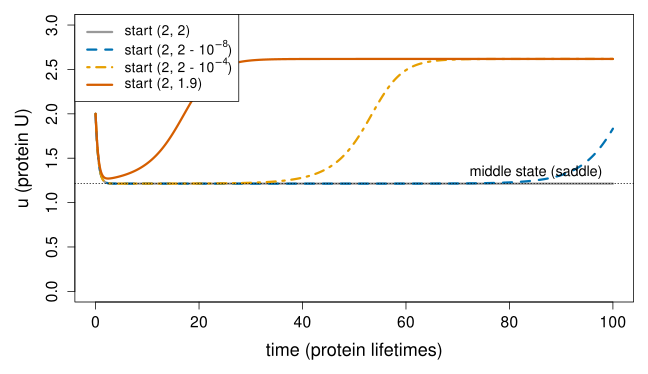
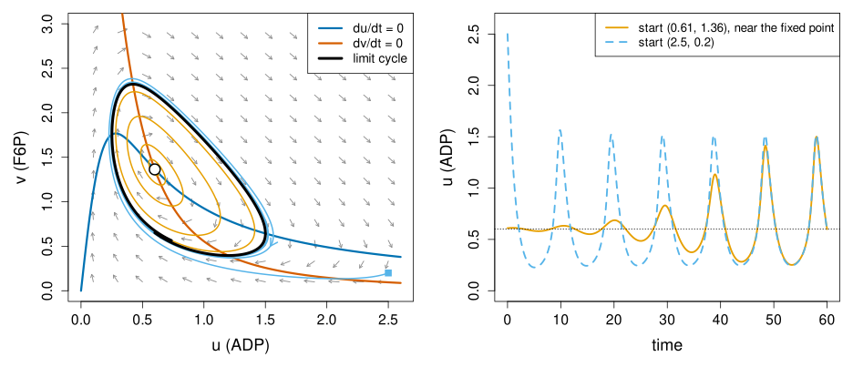
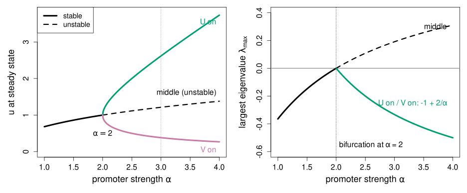

In Newton for systems of equations Newton found the three steady states of the genetic toggle switch. It found the unstable middle one most often. Today we ask the questions a biologist cares about: which steady states are stable, and where does a cell starting at a given point end up?
The phase plane: draw the flow of a two-variable ODE instead of its time course. Nullclines and fixed points.
Linearisation: near a fixed point the ODE behaves like d\boldsymbol\delta/dt = J\boldsymbol\delta. The eigenvalues of the Jacobian decide stability: node, saddle, spiral, centre.
The separatrix of a saddle is the boundary between the basins of attraction, computed by integrating backwards in time.
Limit cycles: oscillations with no stable fixed point (glycolysis in yeast). One slide on bifurcation diagrams.
Failures: a simulation that stops at a saddle; eigenvalues with real part \approx 0.
Newton finds where\mathbf F = \mathbf 0. It does not know which states a cell can actually sit in.
A real cell is never exactly at a steady state: molecules are noisy. A state matters only if small pushes die out: it must be stable.
Two numerical tools answer this: simulation (deSolve) and eigenvalues of J (eigen).
The phase plane

Each point (u, v) is a state of the cell. The ODE gives a velocity(du/dt,\ dv/dt) there: the grey arrows.
A trajectory follows the arrows. Squares: starts; coloured curves: solutions of the ODE.
Time is hidden: we see where the cell goes, not how fast.
Black dots: stable states. White: the middle state. Orange starts end in U on, blue in V on, the grey one (u_0 = v_0) in the middle.
Trajectories with deSolve::ode
library(deSolve)alpha <-3; n <-2toggle <-function(t, x, parms) { u <- x[1]; v <- x[2]list(c(alpha / (1+ v^n) - u, # du/dt alpha / (1+ u^n) - v)) # dv/dt}times <-seq(0, 20, by =0.1)out <-ode(y =c(u =0.5, v =0.3), times = times, func = toggle, parms =NULL)out[c(1, 11, 51, 201), ]# time u v# [1,] 0 0.500000 0.3000000# [2,] 1 1.323446 0.9689792# [3,] 5 1.628533 0.8722946# [4,] 20 2.587075 0.3938494
ode (default method lsoda, adaptive step) wants func(t, x, parms) returning a list. Plot out[, "u"] against out[, "v"] for the phase plane.
Nullclines: where one variable stands still

u-nullclinedu/dt = 0: u = 3/(1 + v^2). On it the flow is vertical.
v-nullclinedv/dt = 0: v = 3/(1 + u^2). On it the flow is horizontal.
Fixed points (steady states) = where they cross.
The nullclines cut the plane into regions with a fixed sign pattern: below both, u and v grow; above both, both shrink. In the thin lenses, the flow points away from the middle state.
Stability in one variable
Logistic growth (the running OD example, r = 0.8 h^{-1}, K = 1.2): \dfrac{dN}{dt} = f(N) = rN\left(1 - \dfrac{N}{K}\right).
Fixed points: f(N^*) = 0, so N^* = 0 or N^* = K.
Push a little: N = N^* + \delta. Taylor: f(N^* + \delta) \approx \underbrace{f(N^*)}_{0} + f'(N^*)\,\delta, so \frac{d\delta}{dt} \approx f'(N^*)\,\delta \quad\Rightarrow\quad \delta(t) \approx \delta_0\, e^{f'(N^*)\,t}
f'(N) = r(1 - 2N/K): f'(0) = 0.8 > 0, unstable (a few cells grow); f'(1.2) = -0.8 < 0, stable (a perturbation of the plateau halves every \ln 2/0.8 = 0.87 h).
Same J as in Newton for systems of equations; a new use. Newton solvesJ\boldsymbol\delta = -\mathbf F; stability asks how e^{Jt}acts on \boldsymbol\delta.
The two equations are coupled: \delta_v feeds \delta_u. To see growth or decay we need to uncouple them.
Eigenvalues decide
If J\mathbf v = \lambda\mathbf v, then \boldsymbol\delta(t) = e^{\lambda t}\,\mathbf v solves \dot{\boldsymbol\delta} = J\boldsymbol\delta (check: both sides equal \lambda e^{\lambda t}\mathbf v). Any start is a mix:
\lambda = 0.19 along (1, -1): more U, less V grows. The cell decides.
\lambda = -2.19 along (1, 1): changing both equally decays.
Trajectories come in along the diagonal and leave along (1, -1), towards U on or V on.
Eigenvalues of big networks
A <-J(states["U_on", ])eigen(A)$values # sorted by |lambda| for non-symmetric A# [1] -1.6666667 -0.3333333power_it <-function(B, k =100) { x <-c(1, 0)for (i in1:k) { x <- B %*% x; x <- x /sqrt(sum(x^2)) }sum(x * (B %*% x)) # Rayleigh quotient}power_it(A) # largest |lambda|: says nothing about stability# [1] -1.666667power_it(A +2*diag(2)) -2# shift: the rightmost eigenvalue now dominates# [1] -0.3333333
Stability needs the eigenvalue with the largest real part, not the largest |\lambda| that power iteration finds (Power iteration and friends).
20 000 genes: do not call eigen (O(n^3)). Use a sparse iterative (Arnoldi) method for the rightmost eigenvalue: RSpectra::eigs(J, k = 1, which = "LR") (How eigen() works, and big problems).
The separatrix: the edge between two fates
The saddle’s stable direction continues as a curve, the separatrix, between the two basins. Trace it by running the ODE backwards from the saddle along \mathbf v_{\text{stable}}. Biased switch (\alpha_v = 2.9):
Left: Newton’s basins for the biased switch (the middle state takes 57 %). Right: the fate of the ODE from each start, by simulation: U on 58 %, V on 42 %. The orange separatrix from the backward runs lies exactly on the boundary.
Newton’s basins are a property of the algorithm; the ODE’s basins are a property of the cell.
Try it: where does the cell go?
Failure: the simulation stops at the saddle

ode(y =c(u =2, v =2), times =c(0, 20, 100),func = toggle, parms =NULL)# time u v# 1 0 2.000000 2.000000# 2 20 1.213412 1.213412# 3 100 1.213412 1.213412
A start on the separatrix (u = v) converges to the saddle. A start 10^{-8} off stays there for \approx 100 time units.
“The simulation settled” does not mean “stable”.
Check: eigenvalues at the end point; restart from a perturbed end point.
Oscillations: glycolysis in yeast
Yeast cells and extracts show oscillating NADH and ADP levels, with periods of about a minute (Chance et al. 1964; Hess & Boiteux 1971). Sel’kov’s model (1968), dimensionless:
\frac{du}{dt} = -u + a v + u^2 v, \qquad \frac{dv}{dt} = b - a v - u^2 v, \qquad a = 0.08,\ b = 0.6
v = fructose-6-phosphate (F6P), fed in at rate b. u = ADP, removed at rate 1.
u^2 v: the enzyme phosphofructokinase turns F6P into ADP and is activated by ADP: positive feedback.
One fixed point, by hand: u^* = b = 0.6, v^* = b/(a + b^2) = 1.364.
Circadian clocks and the cell-cycle oscillator are larger models, but analysed the same way: find the fixed point, find it unstable, look for a cycle.
An unstable spiral
a <-0.08; b <-0.6selkov <-function(t, x, parms) { u <- x[1]; v <- x[2] # u = ADP, v = F6Plist(c(-u + a * v + u^2* v, b - a * v - u^2* v))}Jsel <-function(x) { u <- x[1]; v <- x[2]matrix(c(-1+2* u * v, a + u^2,-2* u * v, -(a + u^2)), nrow =2, byrow =TRUE)}eigen(Jsel(c(b, b / (a + b^2))))$values# [1] 0.09818182+0.6560185i 0.09818182-0.6560185i
The flow points inwards far away (substrate is bounded), outwards near the fixed point. In between, trajectories must circle: a limit cycle.
The limit cycle

From inside (orange, near the fixed point) the spiral grows; from outside (blue) the trajectory shrinks. Both end on the same closed orbit (black).
Its size and period are set by the model, not by the start: a property a biologist can measure.
Measuring the cycle
out <-ode(y =c(u =0.61, v =1.36), times =seq(0, 100, by =0.01),func = selkov, parms =NULL)late <- out[out[, "time"] >60, ] # drop the transientrange(late[, "u"]) # amplitude# [1] 0.2452569 1.5175375up <-which(diff(sign(late[, "u"] - b)) >0) # u crosses b upwardsdiff(late[up, "time"]) # period# [1] 9.62 9.63 9.62
Period \approx 9.62 (time units of ADP turnover). Successive periods agree: the transient is over.
Checks: a second start gives the same range and period; halving rtol/atol changes nothing in the shown digits; the linear guess 2\pi/0.656 = 9.58 is only close because we are near the onset of oscillation.
Failure: \mathrm{Re}\,\lambda \approx 0
At \alpha = 2 the three toggle states merge at (1, 1):
\lambda \approx 0: linearisation cannot decide, and an error of 10^{-6} in the state or in J can flip the sign. Simulations relax very slowly (“critical slowing down”).
Outlook: following steady states as α changes

Bifurcation diagram: steady states against a parameter, solid = stable, dashed = unstable.
At \alpha = 2 the middle branch loses stability and two stable branches appear: bistability begins (a pitchfork).
Numerical continuation: step \alpha, use the previous state as Newton’s start (predictor), correct with Newton, compute eigenvalues. Detect bifurcations where \mathrm{Re}\,\lambda crosses 0.
Find all fixed points: nullclines for two variables, Newton from many starts for more.
Classify each: eigenvalues of J at the fixed point; stable iff all \mathrm{Re}\,\lambda < 0. Use \max(\mathrm{Re}\,\lambda), not values[1].
Is |\mathrm{Re}\,\lambda| large compared with the error in J and in the state? If not, linearisation cannot decide.
Do not trust “the simulation stopped”: check eigenvalues there, restart from a perturbed point, run longer than 5/|\mathrm{Re}\,\lambda|.
Basins: a separatrix from backward runs, checked against a grid of forward simulations.
Oscillations: unstable fixed point + bounded flow → look for a limit cycle; check period and amplitude are independent of the start and the tolerances.
Summary
Phase plane: the flow of a two-variable ODE as arrows and trajectories. Nullclines (\dot u = 0, \dot v = 0) cross at fixed points.
Linearisation: near \mathbf x^*, \dot{\boldsymbol\delta} \approx J(\mathbf x^*)\boldsymbol\delta, solved by e^{\lambda t}\mathbf v. Stable iff all \mathrm{Re}\,\lambda < 0.2\times2: trace and determinant. Node, saddle, spiral, centre.
Toggle switch (\alpha = 3): U on and V on are stable nodes (\lambda = -5/3, -1/3); the middle state is a saddle (\lambda = 0.19, -2.19).
The separatrix (stable manifold of the saddle) separates the basins. Compute it by integrating backwards from the saddle. The cell’s basins are not Newton’s basins.
Limit cycle: an unstable spiral in a bounded flow. Sel’kov glycolysis: period 9.62.
Rightmost eigenvalue, not largest |\lambda|. Failures: simulations that stall at saddles; \mathrm{Re}\,\lambda \approx 0 near a bifurcation (\alpha = 2).